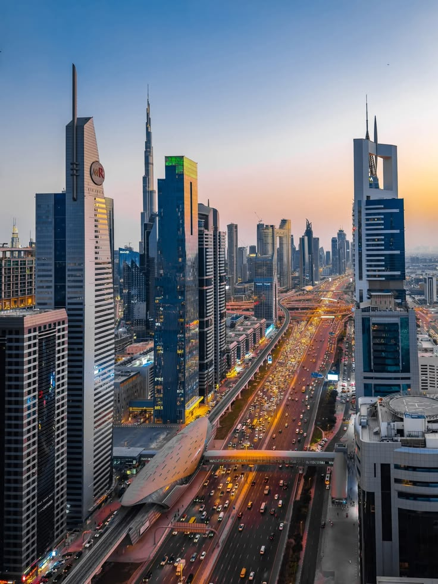

SAUDI ARABIA ? UAE ? COMPARISON
Two of the Middle East's most influential cities. One is a global business hub. The other is rapidly emerging as a regional powerhouse. Which offers the better opportunity in 2026?
Dubai and Riyadh are competing for attention from investors, entrepreneurs, multinational companies and skilled professionals. Both cities offer unique advantages and continue attracting talent from around the world.
While Dubai has decades of experience as an international business center, Riyadh is experiencing rapid growth through Saudi Arabia's Vision 2030 transformation strategy.
Dubai remains one of the world's most internationally connected business hubs. It offers a mature ecosystem of free zones, startups, multinational corporations and global trade networks.
Riyadh is increasingly attracting businesses seeking access to Saudi Arabia's large domestic market and major government-backed projects. Many international companies are expanding their regional presence in the city.
Dubai provides opportunities across tourism, aviation, finance, technology, media, real estate and entrepreneurship.
Riyadh's strongest sectors include government projects, construction, finance, consulting, healthcare, logistics and emerging technology industries.
Both cities continue creating new opportunities for international professionals.
Dubai offers a broad range of housing and lifestyle choices, but premium locations can be expensive. Residents often enjoy a highly international lifestyle with extensive entertainment options.
Riyadh's cost structure varies depending on location and lifestyle. As the city grows, housing and demand for premium communities continue increasing.
Dubai's real estate market is well established and attracts investors from around the world. It offers a wide variety of residential, commercial and luxury developments.
Riyadh is increasingly attracting attention due to large-scale development projects, population growth and long-term economic transformation.
Investors often view Dubai as the more mature market while Riyadh is seen as a high-growth opportunity.
Dubai is known for its international atmosphere, beaches, nightlife, restaurants, shopping and tourism infrastructure.
Riyadh has undergone significant cultural and entertainment expansion in recent years, with new events, attractions, dining experiences and leisure destinations continuing to emerge.
Dubai continues strengthening its position as a global city connecting Europe, Asia and Africa.
Riyadh is rapidly transforming into a major regional business center supported by Vision 2030 initiatives and significant infrastructure investments.
Both cities are likely to play increasingly important roles in shaping the future of the Middle East.
Choose Dubai if you value international connectivity, a mature business ecosystem, global networking opportunities and a highly cosmopolitan lifestyle.
Choose Riyadh if you are looking for emerging opportunities, access to Saudi Arabia's growing economy and participation in one of the region's most ambitious transformation programs.
Many professionals and businesses ultimately find value in maintaining connections to both cities.